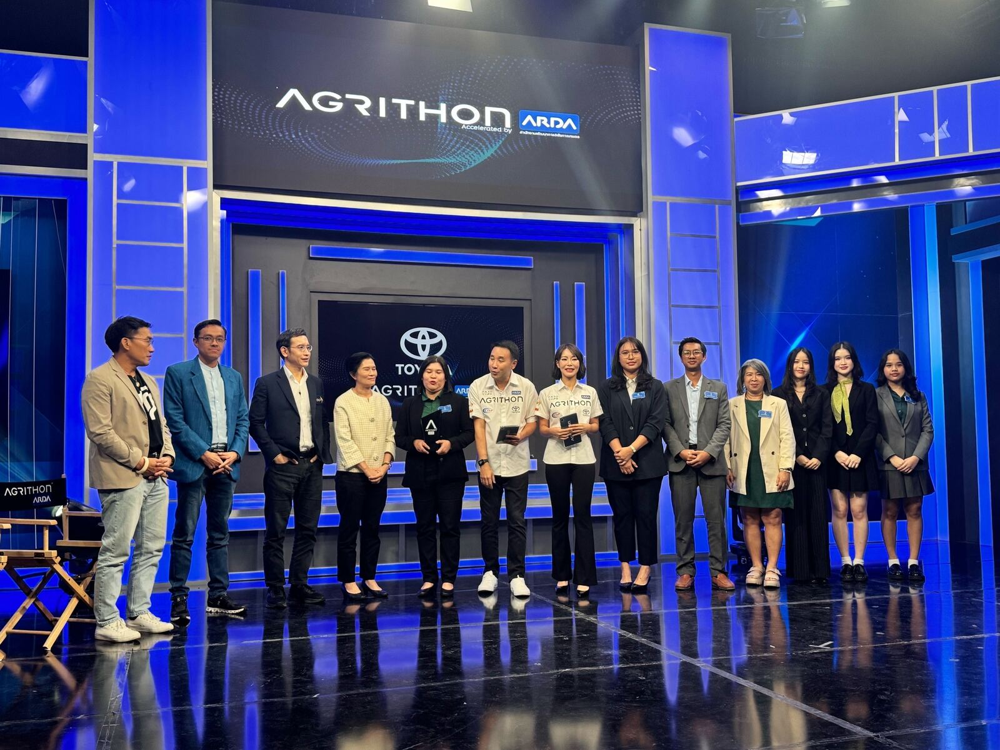
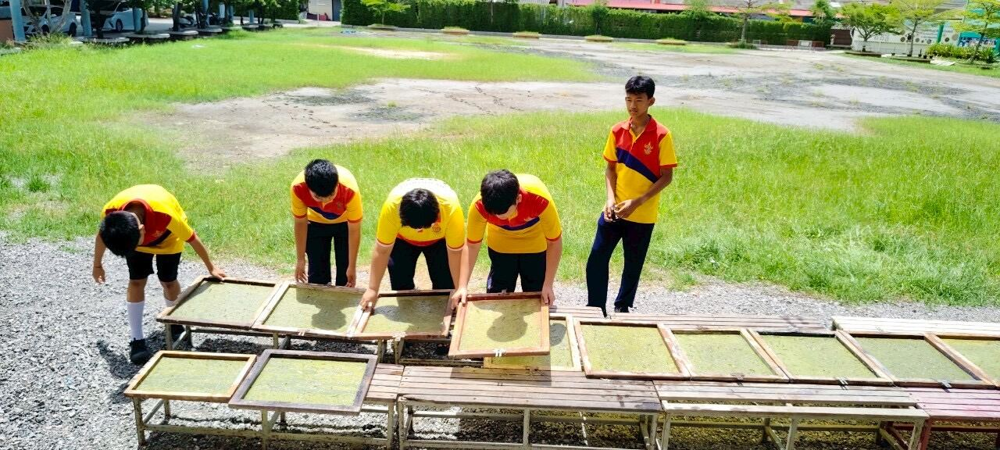
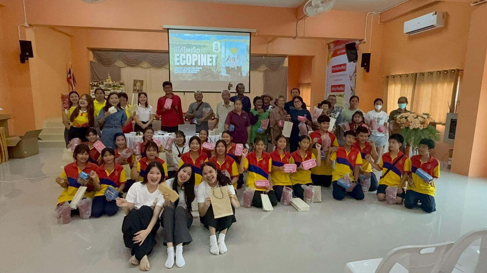

ECOPINET · NONPROFIT SOCIAL ENTERPRISE · CO-FOUNDER
EcoPinet
Packaging with a purpose. Paper, bags and boxes made from pineapple waste that would otherwise be burned, with seeds inside so they grow into something after use.

- ROLE
- Co-founder · Chief Creative Officer
- TIMELINE
- 2025
- TEAM
- 3 co-founders
- SKILLS
- Creative direction · Field research · Pitching · Community workshops
MY PART
- Co-founded EcoPinet and led its creative direction as Chief Creative Officer
- Pitched to judges, investors and audiences at AIHM, Agrithon and FarmExpo
- Interviewed pineapple farmers on their farms
- Ran hands-on paper-making workshops with farmers and students
02 · IMPACT
Not just an idea: tested, judged and taken to people
03 · VALIDATION
From pitch to market
Each step put the product in front of people who could say no: judges, experts, buyers and the farmers themselves.





04 · PROBLEM
Two problems, one material
After harvest, farms are left with leaves and stems, and the cheapest way to clear them is to burn them. Open burning of crop waste is one of the biggest sources of PM2.5, the fine dust that gets deep into the lungs and bloodstream.
At the same time, packaging is the single biggest use of plastic. We started with pineapple in Thailand, where about half of every plant is waste: around 2.7 million tons a year.
- Smoke and PM2.5 in the air
- Waste with no value
- Plastic still needed for packaging
- Paper, bags and boxes
- Income for farmers
- Seeds inside, so it grows back
↻ Click to compare

05 · PROCESS
From farm to prototype
-
1
Start in the field
We visited pineapple farms, talked to farmers about how they clear their land, and collected over 260 kg of leaves and stems. We also toured paper and packaging factories to learn the process.


-
2
Make it hold
The leaves are stripped into fibers, dried, boiled, blended and pressed into sheets. Most binders we tried were either toxic or didn’t hold. Okra mucilage, the sticky gel inside okra, held well, was plant-based and cheap to make in bulk.

-
3
Decide what it’s for
Seeds in the paperTear it up, plant it, water it, and it breaks down in a few weeks into fertilizer and new plants.
Strong enough to replace plasticUp to 84.1 MPa tensile strength, and better against weight and moisture than normal paper.
Start with hotels and cafésHospitality uses huge amounts of single-use plastic and needs to show sustainability.
Made with farmersSimple enough to teach, so farmers can make the paper and earn from waste they used to burn.
06 · PRODUCT
One material, a full product line
Paper bags in three sizes, boxes, tissue boxes, wrapping paper and packaging cushion, plus hotel amenity kits and coffee sleeves for cafés. We also designed a mock-up app for farmers to schedule leaf pickups, track their income and see their impact.


The hotel amenity kit, and the farmer app mock-up.
Our model breaks even at 12,440 units.
07 · COMMUNITY
Giving it back
The point was never just a product. In July 2025 we ran a workshop at a school in a pineapple-farming community, with farmers, parents and students.
We explained why burning leaves hurts the air they breathe, then made paper together: stripping fibers, pressing sheets and folding them into boxes and bags. Everyone left with a step-by-step guide so they could keep going without us.




08 · TAKEAWAYS
What I’m taking with me
- The hardest part wasn’t the paper. It was showing that a material can carry a story: farmers who stop burning, a hotel that can show guests what it’s doing, and packaging that grows something after it’s used.
- Proof beats pitch. EcoPinet took an idea from a pot of boiling leaves to a winning pitch and a room full of farmers making paper.
- It’s where I found the space I love most, between design and business.
09 · THANKS FOR READING :)
More work
 SideBy Concept · 2026
SideBy Concept · 2026
A second pair of eyes for conversations that start to feel off.
 DuoPoker Concept · 2026
DuoPoker Concept · 2026
Poker on Duolingo, taught by a dealer who has seen every hand.